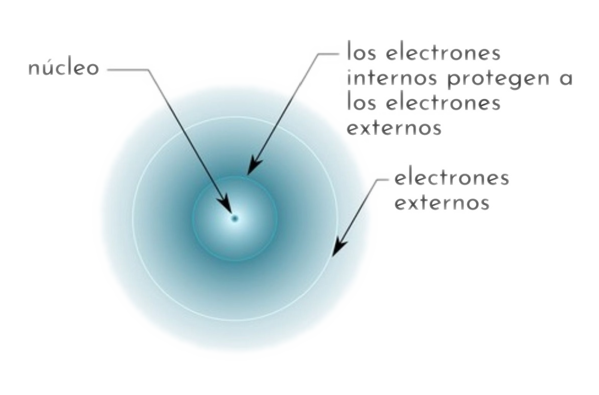
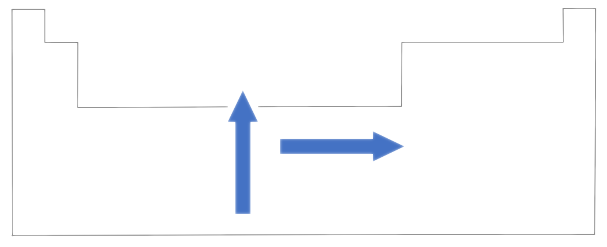

Z*

La carga nuclear efectiva (Z*) es la carga real que mantiene unido a un electrón al núcleo. Depende de dos factores contrapuestos:
- Carga nuclear (Z). A mayor ”Z” mayor ”Z*”, pues habrá mayor atracción por parte del núcleo al haber más protones.
- Apantallamiento o efecto pantalla (a) de electrones interiores o repulsión electrónica. A mayor apantallamiento menor ”Z*”.
Así consideraremos que:
Z* = Z - a
Existen unas reglas (reglas de Slater) que permiten calcular las constantes de apantallamiento de forma aproximada. Debido a las características de este curso nos limitaremos a unos resultados meramente cualitativos.
Variación de la carga nuclear efectiva en la tabla periódica.
En un mismo grupo varía poco (disminuye) al aumentar Z en los electrones de valencia (al descender en el grupo), pues aunque hay una mayor carga nuclear también hay un mayor apantallamiento.
En un mismo periodo aumenta hacia la derecha, debido al menor apantallamiento de los electrones de la última capa y al mayor “Z”, es decir, a medida que se avanza hacia la derecha en un periodo crece más “Z” que “a”, pues el apantallamiento de los electrones de la última capa es inferior a 1.
